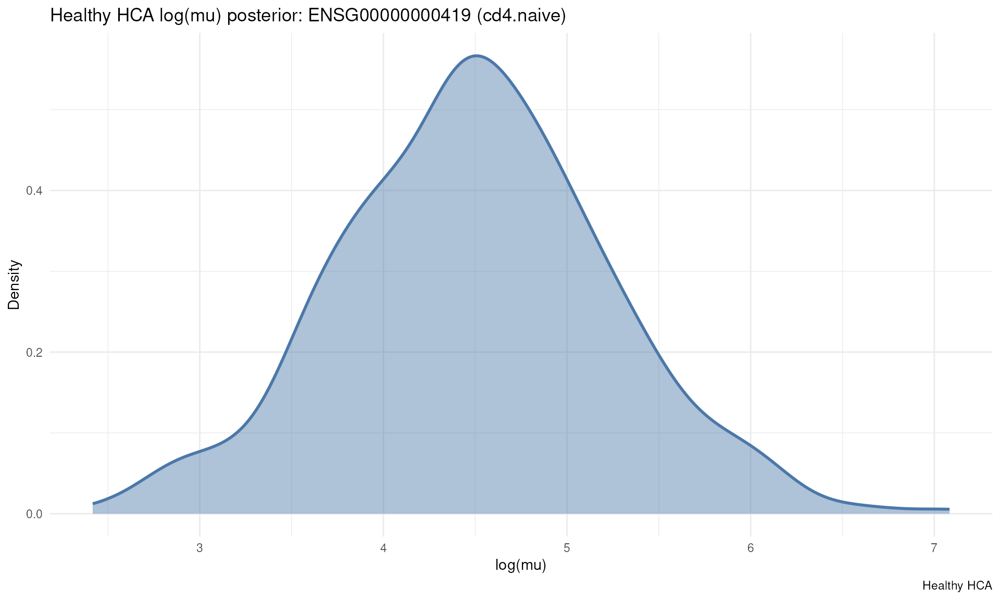

posteriorHCA
Introduction.Rmd
PosteriorHCA applies Bayesian inference
to model the comprehensive Human Cell Atlas (HCA),
allowing researchers to probabilistically analyze both cellular
composition and gene expression patterns
across human samples.
This package provides two main analytical capabilities:
-
Cellular Composition Analysis: Uses the
sccomppackage to model variations in cell type proportions across:- Cell Types
- Sex
- Age
- Ethnicity
- Disease conditions
- Tissue Groups
-
Gene Expression Prediction: Uses
brmsmodels to predict gene expression levels for specific cell types and genes based on sample metadata including:- Cell Types
- Sex
- Age Decade
- Disease Groups
- Ethnicity Groups
- Assay Groups
- Tissue Groups
The probabilistic landscapes are pre-trained,
meaning they represent posterior distributions
estimated from millions of cells. PosteriorHCA makes these
queryable, allowing researchers to:
- Test hypotheses against precomputed reference baselines.
- Compare new samples to expected cellular composition distributions.
- Predict gene expression levels for specific cell types and genes.
- Assess how cell proportions and gene expression vary across human conditions.
Installation
To install the latest development version of
PosteriorHCA from GitHub, run:
# Install devtools if not already installed
install.packages("devtools")
# Install PosteriorHCA from GitHub
devtools::install_github("MangiolaLaboratory/posteriorHCA")Once installed, load the package:
library(posteriorHCA)To rebuild this vignette and sync
README.md, run
source("scripts/render_introduction.R"); render_introduction()
(or Rscript scripts/render_introduction_cli.R from the
package root). Plain
rmarkdown::render("vignettes/Introduction.Rmd") only builds
the vignette HTML.
Usage Examples
1. Cellular Composition Analysis
Load relevant packages and example data
The package includes a small example dataset for demonstration:
data(example_proportions)
print(example_proportions)
#> # A tibble: 26 × 3
#> sample_id cell_type proportion
#> <chr> <chr> <dbl>
#> 1 0000c153da22cf963b807c0563aca6a6 b memory 0
#> 2 0000c153da22cf963b807c0563aca6a6 b naive 0
#> 3 0000c153da22cf963b807c0563aca6a6 cd14 mono 0
#> 4 0000c153da22cf963b807c0563aca6a6 cd16 mono 0.00502
#> 5 0000c153da22cf963b807c0563aca6a6 cd4 fh em 0
#> 6 0000c153da22cf963b807c0563aca6a6 cd4 naive 0
#> 7 0000c153da22cf963b807c0563aca6a6 cd4 tcm 0.000359
#> 8 0000c153da22cf963b807c0563aca6a6 cd4 th1 em 0
#> 9 0000c153da22cf963b807c0563aca6a6 cd4 th1/th17 em 0.000359
#> 10 0000c153da22cf963b807c0563aca6a6 cd4 th17 em 0
#> # ℹ 16 more rowsLoad the healthy sccomp reference
The default composition model is a healthy-only CellNexus sccomp fit.
Unknown covariates can be left as NA; sccomp marginalises
over them automatically.
sccomp_fit <- load_sccomp_fit()Draw healthy reference proportions
comp_draws <- composition_draws(
sccomp_fit,
sex = "male",
age_decade = "4",
ethnicity_groups = "European",
assay_groups = "10x Genomics 3",
tissue_groups = "blood"
)
head(comp_draws$draws)Test and plot observed proportions
test_results <- composition_test(
proportions = example_proportions,
draws = comp_draws
)
test_results
plot_composition_vs_hca(
draws = comp_draws,
test_results = test_results
)composition_posterior_test() remains as a convenience
wrapper around [load_sccomp_fit()], [composition_draws()],
[composition_test()], and [plot_composition_vs_hca()].
Inspect Composition Results
Posterior Distribution Table:
print(test_results)Density Plot of Posterior Predictions:
print(plot_composition_vs_hca(comp_draws, test_results = test_results))2. Gene Expression Prediction
Load a stored expression model and draw healthy posteriors with
load_expression_fit(), build_newdata_grid(),
and expression_draws():
expression_fit <- load_expression_fit(
cell_type = "cd4 naive",
gene_ensg = "ENSG00000000419"
)
#> ℹ Using cached file: /github/home/.cache/R/posteriorHCA/meta/latest.csv
#> ℹ Downloading file from Nectar object storage...
#> ℹ URL: https://object-store.rc.nectar.org.au/v1/AUTH_b0a86a29c8b74630aac35f471cfe1396/V1/cd4.naive/ENSG00000000419
#> ℹ Local path: /github/home/.cache/R/posteriorHCA/V1/cd4.naive/ENSG00000000419
#> ℹ Successfully downloaded file: /github/home/.cache/R/posteriorHCA/V1/cd4.naive/ENSG00000000419
newdata <- build_newdata_grid(
expression_fit,
age_decade = "7",
sex = "female",
disease_groups = "Normal",
ethnicity_groups = "European",
assay_groups = "10x Genomics 3",
tissue_groups = "blood"
)
#> Loading required namespace: rstan
#> ℹ Covariate grid has 1 profile (all metadata fixed).
posterior_draws <- expression_draws(
expression_fit,
newdata = newdata,
quantity = "linpred",
collapse = "mean"
)Inspect Gene Expression Results
Summary Statistics:
summarize_posterior_draws(posterior_draws)
#> $log_mu
#> [1] 4.497503
#>
#> $se
#> [1] 0.7361552
#>
#> $n
#> [1] 400Density Plot of Predicted Expression:
print(plot_hca_draws(posterior_draws))
Input Arguments and Valid Values
Both [composition_test()] / [composition_draws()] and
[expression_draws()] accept metadata inputs corresponding to observed
sample characteristics. For composition, the default healthy sccomp
model uses sex, age decade, ethnicity, assay, and
tissue. Unknown covariates can be set to NA and
are marginalised automatically by sccomp. For expression queries,
metadata can also be left empty to marginalise over the pre-trained
model.
If users choose to specify metadata, it must be consistent with the Human Cell Atlas (HCA) annotations to ensure accurate comparisons. Below is a comprehensive list of valid arguments:
Cell Types: “b memory”, “b naive”, “cd14 mono”, “cd16 mono”, “cd4 fh em”, “cd4 naive”, “cd4 tcm”, “cd4 th1 em”, “cd4 th1/th17 em”, “cd4 th17 em”, “cd4 th2 em”, “cd8 naive”, “cd8 tcm”, “cd8 tem”, “cdc”, “granulocyte”, “ilc”, “macrophage”, “mait”, “mast”, “nk”, “nkt”, “pdc”, “plasma”, “tgd”, “treg”
Sex: “female”, “male”, “unknown”
Age Decades: 1, 2, 3, 4, 5, 6, 7, 8, 9, 10
Ethnicity Groups: “African”, “Other/Unknown”, “European”, “East Asian”, “Hispanic/Latin American”, “South Asian”, “Native American & Pacific Islander”
Tissue Groups: “respiratory system”, “blood”, “renal system”, “small intestine”, “nasal, oral, and pharyngeal regions”, “cerebral lobes and cortical areas”, “bone marrow”, “breast”, “cardiovascular system”, “trachea”, “endocrine system”, “liver”, “large intestine”, “lymphatic system”, “prostate”, “sensory-related structures”, “oesophagus”, “spleen”, “brainstem and cerebellar structures”, “stomach”, “female reproductive system”, “thymus”, “adipose tissue”, “integumentary system (skin)”, “digestive system (general)”, “gallbladder”, “pancreas”
Session Info
sessionInfo()
#> R version 4.6.1 (2026-06-24)
#> Platform: x86_64-pc-linux-gnu
#> Running under: Ubuntu 24.04.4 LTS
#>
#> Matrix products: default
#> BLAS: /usr/lib/x86_64-linux-gnu/openblas-pthread/libblas.so.3
#> LAPACK: /usr/lib/x86_64-linux-gnu/openblas-pthread/libopenblasp-r0.3.26.so; LAPACK version 3.12.0
#>
#> locale:
#> [1] LC_CTYPE=en_US.UTF-8 LC_NUMERIC=C
#> [3] LC_TIME=en_US.UTF-8 LC_COLLATE=en_US.UTF-8
#> [5] LC_MONETARY=en_US.UTF-8 LC_MESSAGES=en_US.UTF-8
#> [7] LC_PAPER=en_US.UTF-8 LC_NAME=C
#> [9] LC_ADDRESS=C LC_TELEPHONE=C
#> [11] LC_MEASUREMENT=en_US.UTF-8 LC_IDENTIFICATION=C
#>
#> time zone: UTC
#> tzcode source: system (glibc)
#>
#> attached base packages:
#> [1] stats graphics grDevices utils datasets methods base
#>
#> other attached packages:
#> [1] posteriorHCA_0.2.0
#>
#> loaded via a namespace (and not attached):
#> [1] gridExtra_2.3.1 inline_0.3.21
#> [3] rlang_1.3.0 magrittr_2.0.5
#> [5] otel_0.2.0 matrixStats_1.5.0
#> [7] compiler_4.6.1 loo_2.10.1
#> [9] systemfonts_1.3.2 callr_3.8.0
#> [11] vctrs_0.7.3 stringr_1.6.0
#> [13] pkgconfig_2.0.3 crayon_1.5.3
#> [15] fastmap_1.2.0 backports_1.5.1
#> [17] XVector_0.53.0 labeling_0.4.3
#> [19] utf8_1.2.6 rmarkdown_2.32
#> [21] tzdb_0.5.0 ps_1.9.3
#> [23] ragg_1.5.2 purrr_1.2.2
#> [25] bit_4.6.0 xfun_0.60
#> [27] cachem_1.1.0 jsonlite_2.0.0
#> [29] DelayedArray_0.39.6 parallel_4.6.1
#> [31] R6_2.6.1 bslib_0.12.0
#> [33] stringi_1.8.9 RColorBrewer_1.1-3
#> [35] StanHeaders_2.39.1 GenomicRanges_1.65.4
#> [37] jquerylib_0.1.4 Rcpp_1.1.2
#> [39] Seqinfo_1.3.2 rstan_2.32.7
#> [41] SummarizedExperiment_1.43.0 knitr_1.52
#> [43] readr_2.2.0 IRanges_2.47.5
#> [45] bayesplot_1.16.0 Matrix_1.7-6
#> [47] tidyselect_1.2.1 abind_1.4-8
#> [49] yaml_2.3.12 stringfish_0.19.2
#> [51] codetools_0.2-20 curl_8.0.0
#> [53] processx_3.9.0 pkgbuild_1.4.8
#> [55] lattice_0.23-1 tibble_3.3.1
#> [57] withr_3.0.3 Biobase_2.73.2
#> [59] bridgesampling_1.2-1 sccomp_2.5.0
#> [61] S7_0.2.2 posterior_1.7.0
#> [63] coda_0.19-4.1 evaluate_1.0.5
#> [65] desc_1.4.3 RcppParallel_6.2.1
#> [67] pillar_1.11.1 MatrixGenerics_1.25.0
#> [69] tensorA_0.36.2.1 checkmate_2.3.4
#> [71] stats4_4.6.1 distributional_0.8.1
#> [73] generics_0.1.4 vroom_1.7.1
#> [75] rprojroot_2.1.1 S4Vectors_0.51.9
#> [77] hms_1.1.4 ggplot2_4.0.3
#> [79] rstantools_2.7.1 scales_1.4.0
#> [81] qs2_0.3.1 glue_1.8.1
#> [83] tools_4.6.1 forcats_1.0.1
#> [85] fs_2.1.0 mvtnorm_1.4-2
#> [87] grid_4.6.1 tidyr_1.3.2
#> [89] QuickJSR_1.11.0 instantiate_0.2.3
#> [91] SingleCellExperiment_1.35.2 nlme_3.1-171
#> [93] patchwork_1.3.2 cli_3.6.6
#> [95] textshaping_1.0.5 S4Arrays_1.13.0
#> [97] Brobdingnag_1.2-9 dplyr_1.2.1
#> [99] V8_8.2.0 gtable_0.3.6
#> [101] sass_0.4.10 digest_0.6.39
#> [103] BiocGenerics_0.59.12 SparseArray_1.13.2
#> [105] ggrepel_0.9.8 brms_2.23.0
#> [107] htmlwidgets_1.6.4 farver_2.1.2
#> [109] htmltools_0.5.9 pkgdown_2.2.1
#> [111] lifecycle_1.0.5 httr_1.4.9
#> [113] bit64_4.8.6